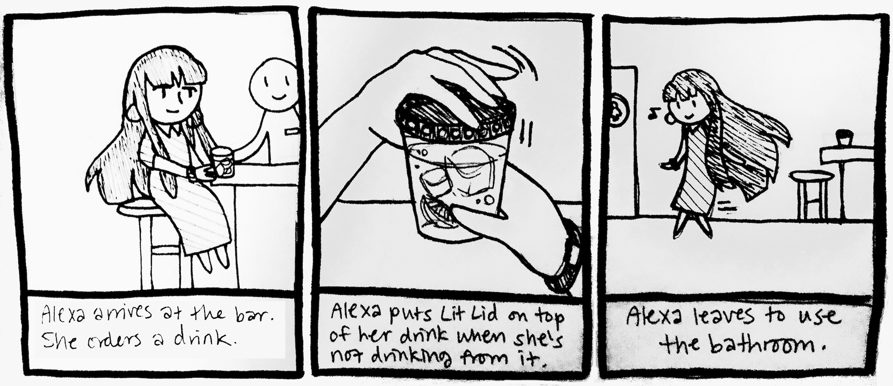
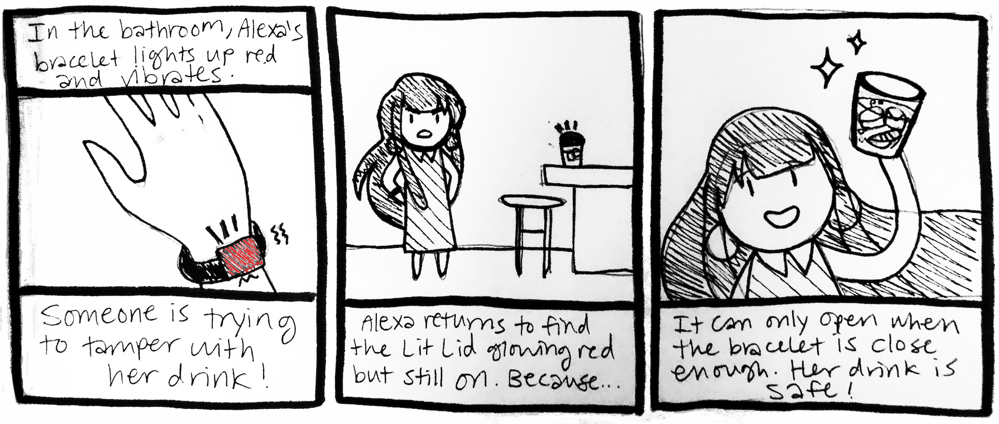

Drink tampering done with the intention of perpetrating sexual assault is unfortunately a prevalent problem in society today, and especially affects college-age women and other vulnerable communities. There is no widespread solution for people who go out to bars, parties, or other social outings to detect whether or not their drink has been spiked or otherwise tampered with. While this is a significant safety issue, it has yet to be addressed in a convenient or affordable manner. We propose a tangible interface called Lit Lids that consists of a reusable smart lid and paired bracelet with light and vibrotactile feedback that alerts users to any interference with their drink.
Why Lit Lids?
A tangible approach to the problem of drink spiking is beneficial because it is a better way to prevent the crime from happening, instead of just detecting it. It is also has a low intrusive element as the user should not have to do anything different than what they would do with a regular drink, besides wearing a bracelet and closing and opening a lid. This design is the easiest for a person to use to detect and prevent contamination in comparison to using testing strips or a regular lid that cannot tell you if it’s been taken off.
Concept
Inspiration
The attached location-detecting bracelet is inspired by related works on smart bracelets, such as Angelini et al.'s monitoring bracelet designed for the elderly that defines the aesthetics and functionalities of bracelets to account for physical or cognitive impairments. This is relevant to our work because we must take into consideration accessible design in creating a wearable targeted for use by those who may be incapacitated or otherwise impaired by alcohol intake.
We also looked into Ye, Li, and Shen's Soter, smart bracelets designed for children’s safety, which uses similar GPS functionality as our bracelet incorporates, and a smart notification system that we hope to implement in the future.
Design Principles
We design the lid to initially fit most common cup diameter of a solo cup (9.32 cm). The user wears a bracelet that the lid can detect the distance to. If the lid is opened very close to the bracelet, for example while holding the cup in that hand, the lid opens normally. If the lid is opened and the bracelet is not in the required distance the lid and bracelet will flash a red light and give vibrotactile feedback that can only be turned off by contact with the bracelet.
This serves the purpose of notifying the owner of the drink and people around that someone else has taken off the user’s cup lid, regardless of what type of interference occurred. This accounts for all forms of tampering and allows the user to decide their next step. It is also meant to deter assailants away from the drink and the user, realizing that the flashing feedback may alert others to their identity or intentions.
Conceptual Design
The concept of the extension of the body through objects from Danielle Wilde, Thecla Schiphorst, and Sietske Klooster's Move to Design / Design to Move: A conversation About Designing for the Body strongly impacted the design of the Lit Lid user interface. The Lid Lid is designed to be an effortless extension to the user's awareness of their drink at a party. The user will not have to consciously keep track of who is by their drink because the Lit Lid will alert them when someone attempts to tamper with it. The bracelet is the most impacted by this paper as it's purpose to measure the distance between itself and the lid to determine who is opening the lid, should be unnoticed by the user. The bracelet should only be noticed when it is alerting the user of possible contamination. Furthermore, the Lit Lid system is embedded into the users drinking habit because as long as the user wears the bracelet, they are able to interact with the lid without interference.
Thus the only change in their routine is the physical act of placing the lid, removing the lid, and attaching the lid to the bottom of the cup.
Based off of Albrecht Schmidt, Uni Karlsruhe, Kristof Van Laerhoven, and Starlab Research's How to Build Smart Appliances, our pressure and distance sensors in the Lit Lid are designed to maximize unobtrusiveness of the Lid Lid's lid and bracelet. Thus the user's interaction with the wearable and the lid is meant to be an unobtrusive way to incorporate better drink protection and spiking prevention into their drinking routine.
Initial Storyboard


Process
Design Implementation
The Lit Lid is a plastic circular lid with a ring of red LED lights along the top border of the lid. The LEDs light up red to indicate to the user that the lid was open by someone other than the user and is thus possible contamination.
The lid uses pressure and motion sensors that line up with the underside rim of the lid, to determine when the lid is taken off and on. The underside of the lid has a silicone adhesive that enables the lid to snap to the bottom of the glass, for placement when the user is drinking from their cup.
Additionally, the lid connects via Bluetooth to a bracelet the user wears. The bracelet contains a plastic square piece that holds LEDs, vibration, and discrete button. The Bluetooth from the lid sets off the LEDs and vibration in the bracelet to communicate to the user immediately when the lid is opened by someone other than them. The user can turn off their bracelet indicators by pressing on the plastic piece. To determine who is opening the lid, the lid contains GPS tracking to the bracelet to find the distance between them. When the lid is farther than 20 centimeters away from the bracelet, the lid set off its LEDs and sends an alert to the bracelet which sets off it's LEDs and vibration.
Furthermore, a user wearing the bracelet can take off the lid without setting of the alarm because the bracelet is close enough. To turn off the LEDs on the cup, the user takes off the lid with the bracelet at maximum 20 centimeters away from it. We believe this design is ideal because it is minimally invasive to the normal drinking habit of the user. When used correctly, meaning the user opens the lid only when wearing the bracelet, the only upset to their normal habit is the act of placing and removing the lid on the cup. Besides this, the user is only impacted in their routine when the lid and bracelet notifies them of possible contamination by someone else removing their lid.
The use of LEDs and vibration in the notification system enables auditory and tactile notification to the user. The alerts on both the lid and bracelet gives multiple notification paths to the user. Additionally, it also communicates to others that there might be something wrong, increasing the awareness and leading to a greater chance of preventing drink spiking.
Design Sketches
Technical Diagram
Proof of Concept
The wearable is a soft, flexible, and fashionable band designed to augment to any wrist size. The wearable has a small button interface with lights embedded on the top that flashes when the user's lid has been removed when the user has stepped away from their drink. The bracelet and the lid both use batteries to stay powered up. The user can replace the batteries in the bracelet by unclipping the bracelet to open it up and reveal a small section that keeps the batteries.
The bracelet has an embedded Bluetooth Arduino that connects with a small Bluetooth Arduino that is connected to the user’s designated lid. The Bluetooth Arduino has GPS tracking that allows it to know when the user has stepped a certain range away from their cup. The bracelet has a small vibration device that can be turned off when the user clicks the button interface at the top of their bracelet.
The Lit Lids lid is a 3-D printed cup lid embedded with lights along the top and the rim. The lights will flash red when removed when the user is far away from the lid. The lid (10.53 cm diameter) is created to fit a standard Solo Cup (9.53 cm diameter). When the user is within a certain distance of their cup, the lid will automatically turn off its safety setting and will allow the user to remove the lid without any additional feedback. Essentially the user will only receive feedback from their device when someone is potentially
tampering with it, otherwise the user can comfortably move away from their drink.